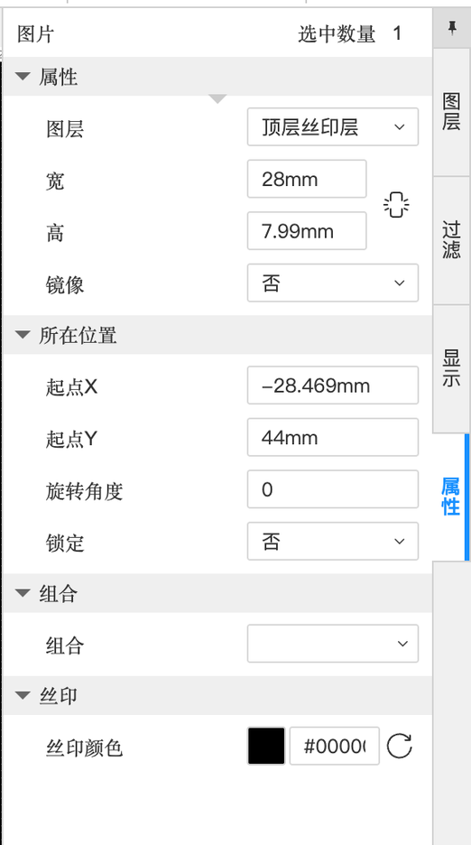
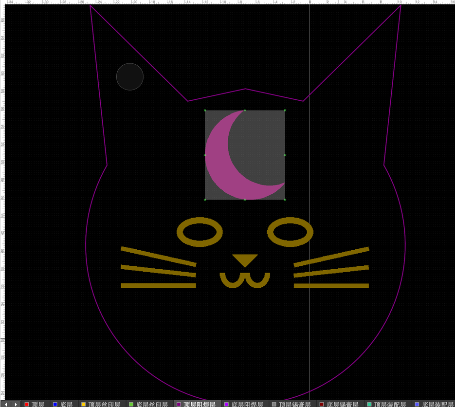
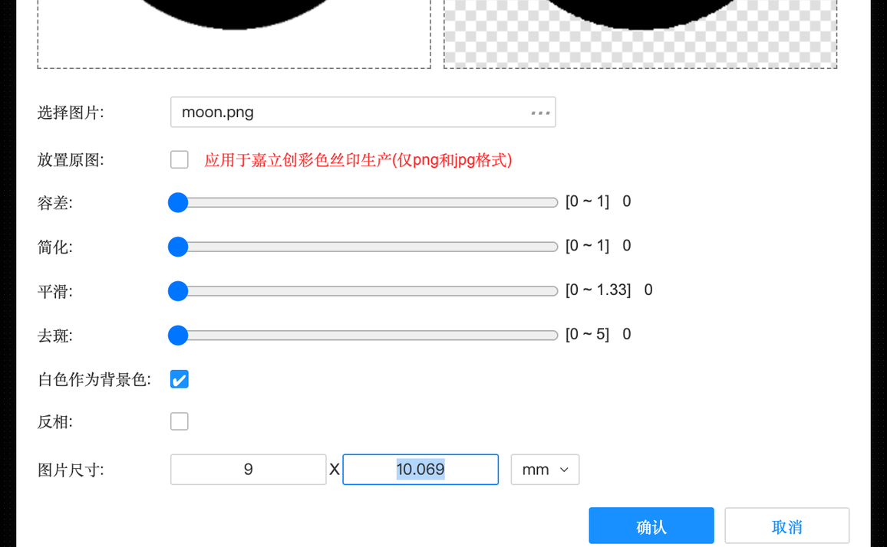
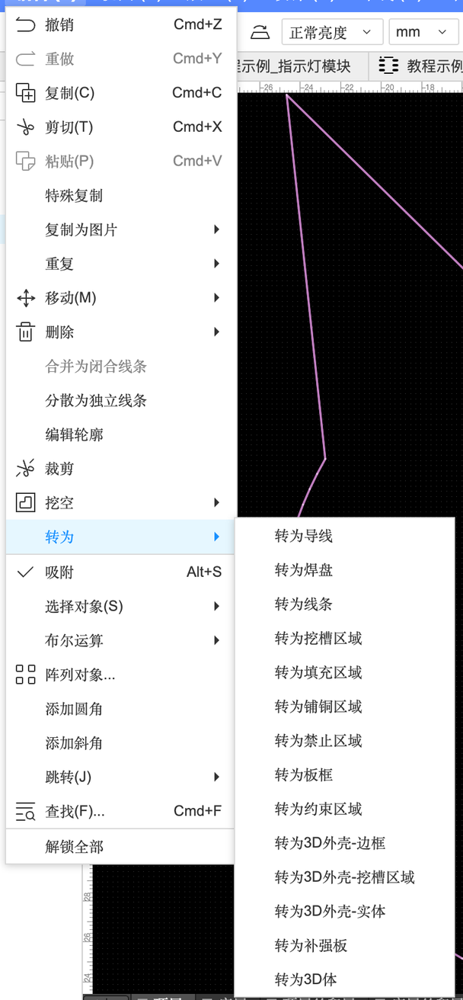
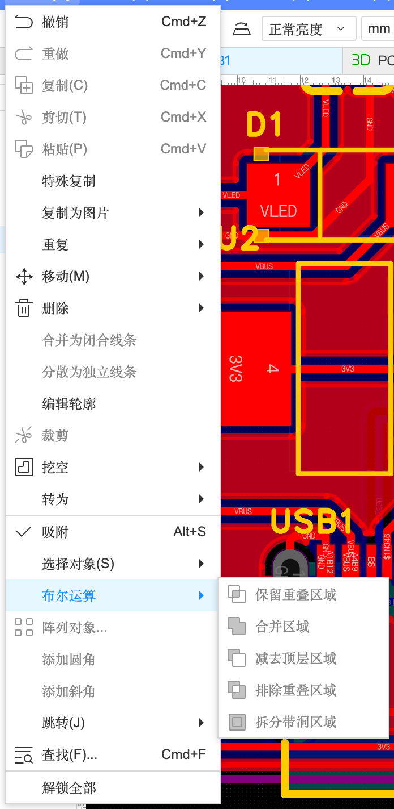
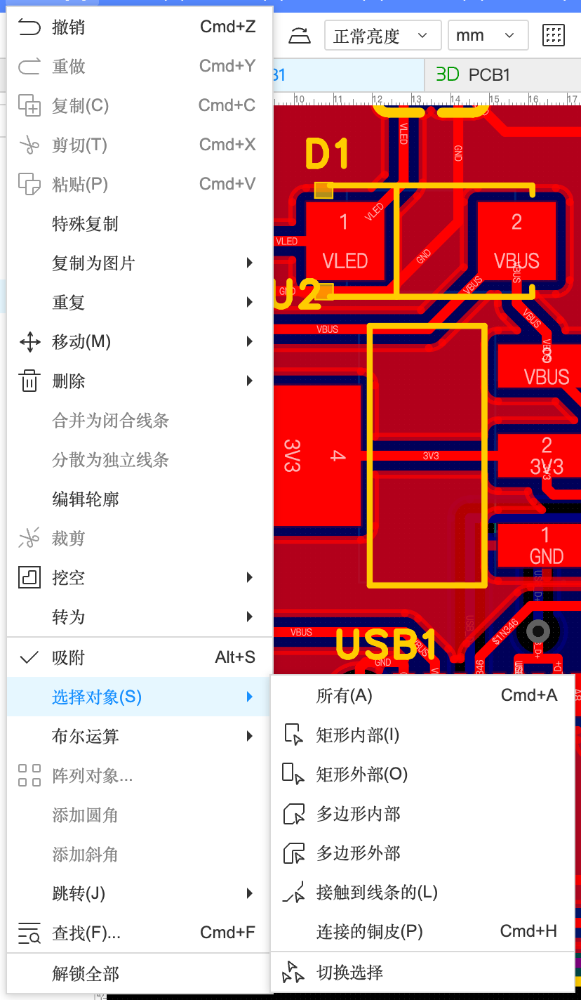

6.3 丝印、图案与编辑技巧
电路板不只是电路，它也可以很好看。这一页讲板子表面能做的所有“画面”：文字和图片丝印、利用铜和阻焊做出金色图案、板子颜色和彩色丝印，以及让这些图形好编辑的转换、布尔运算、阵列等技巧。本教程实际把猫头小板子做成了一件小作品。
先看成品#
板子上的“画面”其实只有三种颜料：丝印（白色油墨）、阻焊（绿/蓝/黑……那层油漆）、露出来的铜（经过表面处理后是金色或银色）。理解了这三样，你就能在板子上做一些定制的创作。
丝印与图形#
文字#
「放置」→「文本」（A-8）。中文会自动用黑体，字高建议 ≥ 1 mm、线宽 ≥ 0.15 mm，太小会印糊。底层文字编辑器会自动镜像，不用手动勾（B-3）。
图片丝印#
- 底部图层栏切到「顶层丝印层」（图片会放在当前层）
- 「放置」→「图片…」，选一张黑白、高对比的图片（PNG/JPG）
- 在对话框里设尺寸，点「确认」，图片跟着鼠标，单击放下
- 在属性面板里调整位置
放置图片对话框（实测）
| 选项 | 含义 | 建议 |
|---|---|---|
| 选择图片 | 图片文件 | 黑白线稿最好 |
| 放置原图 | 勾选后保留图片原本的颜色，用于嘉立创彩色丝印工艺（仅 PNG、JPG）。不勾 = 转成单色图形 | 普通丝印不勾 |
| 容差 | 判断“哪些算黑、哪些算白”的阈值，灰色多的图片调这个 | 0 |
| 简化 | 减少轮廓的点数，图形更简洁 | 0 |
| 平滑 | 让锯齿边更圆滑 | 0～0.5 |
| 去斑 | 去掉零星的小黑点（照片噪点） | 0～1 |
| 白色作为背景色 | 白色部分透明，只保留黑色部分 | 勾选（默认） |
| 反相 | 黑白颠倒 | 看图片 |
| 图片尺寸 | 宽 × 高（mm），锁定比例，改一个另一个自动变；会自动裁掉四周空白 | 本例宽 28 mm |


用铜和阻焊做出“金色”图案#
原理就是上面互动图里的“开窗”：在顶层铜上放一个图案，再在顶层阻焊层的同一位置放一个一模一样的图案。阻焊层上的图形表示“这里不刷油漆”，铜就露出来了；下单时表面处理选沉金，露出来的铜就是金色的（选喷锡就是银色）。
- 底部图层栏切到「顶层」，「放置」→「图片…」放一个弯月（本例宽 9 mm）
- 切到「顶层阻焊层」，用同一张图片、同样尺寸再放一次
- 在属性面板里把两个图片的起点 X/Y 改成完全一样（本例都是 X −11.73、Y 56.034）
- 3D 预览查看效果（3D 预览里「焊盘喷镀」默认显示金色）


板子颜色和彩色丝印#
- 阻焊颜色在下单时选：嘉立创下单页实测有绿色、红色、黄色、蓝色、白色、哑黑色、嘉立创紫（A-10）。3D 预览右侧「板子颜色」可以先换着看效果（实测选项：绿/蓝/红/白/黄/黑/紫/铜色）。
- 字符（丝印）颜色：白色是标配；下单页还有其他字符颜色选项（随阻焊颜色变化，以下单页为准）。
- 彩色丝印：嘉立创的彩色丝印工艺可以印全彩图片。放图片时勾「放置原图（应用于嘉立创彩色丝印生产）」，导出 Gerber 时勾「生成彩色丝印制造文件」（A-10 的 Gerber 对话框里有这个选项），并在「设置」→「PCB/封装」里开启“使用嘉立创彩色丝印工艺”。彩色丝印是收费工艺，价格以下单页为准。
其他图形#
- 线条（放置 → 线条 → 折线 / 中心圆弧 / 两点圆弧 / 三点圆弧 / 圆形 / 矩形）：在丝印层画装饰线、边框
- 堆叠表 / 钻孔表：在板上放一张表格，列出层叠结构 / 所有孔的尺寸和数量（给工厂或文档用）
- FPC 补强板：柔性板的加厚区域（做柔性板才用）
编辑技巧#
转为：图形之间互相转换#

这是做异形和图案时最有用的功能：用“线条”画出一个形状，然后转成你要的任何东西——转成板框就是外形，转成挖槽就是镂空，转成填充就是一块铜。图片不能直接转换（实测菜单全灰），要先用线条/多边形描出来。
布尔运算：形状的加减法#

| 选项 | 效果 | 举例 |
|---|---|---|
| 合并区域 | A + B 合成一块 | 一个圆 + 两个三角 = 猫头 |
| 减去顶层区域 | A − B，挖掉上面那块 | 一个圆减去一个错开的圆 = 弯月 |
| 保留重叠区域 | 只留 A 和 B 重叠的部分 | — |
| 排除重叠区域 | 去掉重叠部分，留下不重叠的 | — |
| 拆分带洞区域 | 把有洞的区域拆成几块 | — |
其他编辑功能#
| 功能 | 说明 |
|---|---|
| 特殊复制 | 复制时保留网络等信息 / 按特定方式粘贴 |
| 合并为闭合线条 / 分散为独立线条 | 多段线合成一条闭合线（DXF 导入后必用）/ 反过来拆开 |
| 编辑轮廓 | 拖动区域的顶点改形状 |
| 添加圆角 / 斜角 | 把选中区域、板框的尖角变圆 / 切角 |
| 阵列对象… | 一次复制出一排或一圈（比如一圈 LED 排成钟表） |
| 选择对象 | 所有、矩形内部 / 外部、多边形内部 / 外部、接触到线条的、连接的铜皮、切换选择 |
| 吸附 | 开关吸附；吸附点设置在「设置」→「PCB/封装」→「吸附」（3.1） |
| 查找 ⌘F / 跳转 | 找元件、网络，跳到坐标 |
